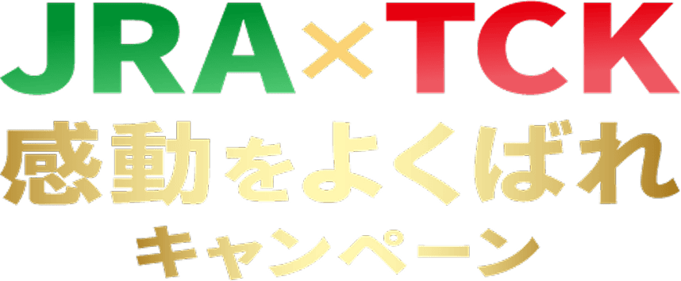
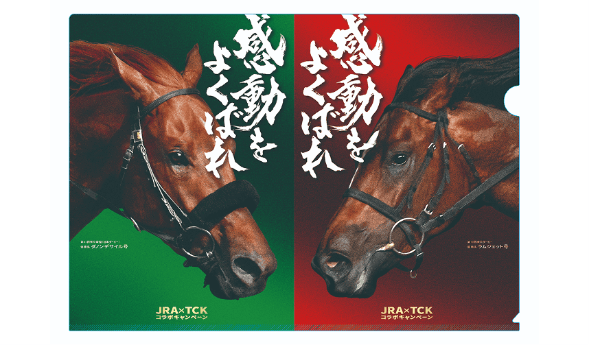
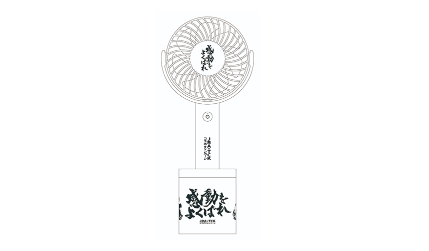

![6.1SUN 15:40[G1] 日本ダービー](./assets/images/img-text-pc-left-01.png)
![6.11 Wed 20:05[JpnI] 東京ダービー](./assets/images/img-text-pc-right.png)

JRA
インターネット投票
新規入会を
ご希望される方
新規入会を
ご希望される方
 東京シティ競馬の魅力とは？
東京シティ競馬の魅力とは？


※当キャンペーンはオンラインでのご応募限定です。
TCKとJRAのレースのどちらかの馬券を
500円以上購入すると
抽選でデジコが貰える!
さらに
TCKとJRA、両方購入でWチャンス!!
両方の馬券を500円以上購入した場合は
金額がアップした抽選に参加可能！
- 当選は1回限りとなります。
- 応募対象者は日本国内にお住まいの20歳以上の方に限ります。
- 画像はイメージです。仕様変更によりデザインが変更になる場合があります。
- 応募にはX・Instagramいずれかのアカウントが必要です。
- 本キャンペーンは、X社・Meta社とは一切関係ありません。
- 本キャンペーンはX、Instagramを利用して応募データを収集しています。
本キャンペーン期間中にX社・Meta社によるAPIの仕様変更に伴い応募データが収集できない事象が発生した場合、それ以降のご応募については無効、または本キャンペーン自体が早期終了となる可能性がございます。あらかじめご了承ください。
東京ダービー 日本ダービー
東京ダービーと日本ダービーの
レースの「どちらかの馬券」を
500円以上購入すると
抽選で80名様に5,000円分の
デジコをプレゼント!
「両方の馬券」を500円以上購入
すると追加抽選のチャンス！
20名様に10,000円分の
デジコをプレゼント!
開催日程
日本ダービー：6月1日 (日)
東京ダービー：6月11日 (水)
実施期間
2025年5月31日 (土) 〜6月14日 (土)
キャンペーン応募方法
開催日程
- 6月1日(日)
- JRA 日本ダービー
- 6月11日(水)
- TCK 東京ダービー
- 6月15日(日)
- JRA 宝塚記念
- 7月2日(水)
- TCK 帝王賞
- 12月27日(土)
- JRA ホープフルステークス
- 12月28日(日)
- JRA 有馬記念
- 12月29日(月)
- TCK 東京大賞典
リアルイベント情報

東京競馬場でオリジナルクリアファイルを1万名様にプレゼント！
6月８日（日）にJRA東京競馬場で「JRA×TCKコラボキャンペーン」スペシャルイベントを開催！
昨年の日本ダービーと東京ダービーの優勝馬がデザインされたオリジナルクリアファイルを先着10,000名様にプレゼントします。
また、安田記念と東京ダービーの感動的レースをパネル展示で紹介する「感動パネル展」をあわせて実施します。
〈オリジナルクリアファイルプレゼント〉
実施日：2025年6月8日 (日)
時間：開門～配布終了まで
場所：JRA東京競馬場
正門（3F）、西門（2F）、イーストホール（1F）
配布数：10,000枚
※お一人様1枚限り、なくなり次第終了となります。
〈JRA×TCK感動パネル展〉
実施日：2025年6月8日（日）
場所：JRA東京競馬場 イーストホール

大井競馬場でオリジナルハンディファンを抽選で500名様にプレゼント！
6月8日（日）のJRA東京競馬場でオリジナルクリアファイルと一緒に特別抽選券を配布します。
6月11日（水）の東京ダービー当日に、抽選券を持参して大井競馬場にご来場いただいた方を対象に、オリジナルハンディファンが当たる抽選会を実施します。
〈TCK大井競馬場でのコラボ抽選会〉
※特別抽選券持参者限定
実施日：2025年6月11日（水）
時間：開門～配布終了まで
場所：ウマイルスクエア
賞品：オリジナルハンディファン 500名様
参加条件：6月8日（日）にJRA東京競馬場で配布した特別抽選券を提示
※お一人様1回限り、賞品がなくなり次第終了となります。
TCK公式アカウントフォローと
当キャンペーンのポストをリポストすると
抽選で100名様に1,000円分の
デジコをプレゼント!
キャンペーン期間
日本ダービー：5/29（木）10:00〜6/1（日）23:59
東京ダービー：6/8（日）10:00〜6/11（水）23:59
よくあるご質問
キャンペーンの参加方法について教えてください。
日本ダービー（6/1開催）または東京ダービー（6/11開催）、あるいは両方のレースで500円以上の馬券を購入し、その投票内容照会画像とともに必要事項をキャンペーンサイト内の応募フォームから送信してください。オンラインでの購入が対象となります。
どのような馬券画像が応募対象になりますか？
即PAT、SPAT4、UMACAスマートで購入された馬券の投票内容照会画面の画像のみが対象となります。それ以外の方法（窓口や券売機を含む。）で購入された馬券は対象外となりますのでご注意ください。
当選の発表はどのように行われますか？
キャンペーン期間終了後に抽選を行い、当選者にのみキャンペーン事務局よりメールにて賞品送付のご案内をいたします。応募時に入力されたメールアドレスが無効の場合、ご案内ができませんのでご注意ください。
複数回応募することはできますか？
同一人物による複数応募は無効となります。お一人様1回のご応募でお願いいたします。各キャンペーン該当レース両方への応募は、1回の応募として扱われ、Wチャンスの抽選対象となります。
当選した賞品を他の人に譲ることはできますか？
当選の権利を他人に譲渡することはできません。当選者ご本人のみが賞品を受け取ることができます。
PayPayやAmazonギフトカードをはじめ、ポイント交換先サイトのPeXポイントギフトを選ぶと、dポイントや各社マイル・電子マネーなどとも交換できるデジタルギフトです。
キャンペーンに関する
お問い合わせ先
#感動をよくばれキャンペーン事務局
（株式会社CARTA MARKETING FIRM 内）
本キャンペーンは本組合が企画し、株式会社CARTA MARKETING FIRMが主体となって運営しております。
なお、応募受付の確認、審査に関するお問い合わせについては回答いたしかねます。
JRA
インターネット投票
新規入会を
ご希望される方
新規入会を
ご希望される方
大井競馬のレース中継を
観るならこちら！
勝馬投票券の購入は20歳から、適度に遊ぶ、
大人のたしなみ。
地方競馬の収益金は、畜産振興及び地方財政の
改善に活用されています。
#感動をよくばれキャンペーン
東京ダービー×日本ダービー
応募規約
事前に以下の応募要項を全てお読みいただき、ご同意いただいたうえで当キャンペーンにご応募ください。
本規約は特別区競馬組合（以下「本組合」といいます）が提供する「 #感動をよくばれキャンペーン」（以下「本キャンペーン」といいます）に関する諸条件を定めるものです。本キャンペーンに応募するお客様（以下「応募者」といいます）は、本規約に同意の上ご応募ください。
- 参加方法
- 6/1(日)開催の日本ダービー、 6/11(水)開催の東京ダービー のいずれか、または双方のレースの500円以上の投票内容照会画像、および必要項目をキャンペーンサイト内応募フォームより入力の上ご応募ください。
- 馬券画像に関して
-
下記サービスで購入された投票内容照会画面の画像のみを当選対象とさせていただきます。
- 即PAT
- SPAT4
- UMACAスマート
- 窓口や券売機で購入した馬券画像は対象外となります。あらかじめご了承くださいませ。
- 応募期間
- 2025/5/31(土)00:00〜6/14(土)23:59
- 当選賞品
-
-
6/1(日)開催の日本ダービー、6/11(水)開催の東京ダービーのいずれかに参加の場合
抽選で80名様にデジコポイント5,000円分をプレゼント。 -
6/1(日)開催の日本ダービー、6/11(水)開催の東京ダービー双方に参加の場合
抽選で80名様にデジコポイント5,000円分をプレゼントの権利に加え、Wチャンスとして、抽選で20名様にデジコポイント10,000円分をプレゼント。
-
6/1(日)開催の日本ダービー、6/11(水)開催の東京ダービーのいずれかに参加の場合
- 当選発表
- キャンペーン期間終了後に抽選を行います。追って当選者にのみ、キャンペーン事務局よりメールにて賞品の送付をいたします。入力メールアドレスが無効の場合にはご案内ができませんので、ご注意ください。
- 注意事項
-
- 同一人物の複数応募が確認された場合、ご応募は無効とさせていただきます。
- アップロードした画像が不鮮明な場合、また入力内容にご応募は無効とさせていただきます。
- 当選の権利を他人に譲渡することはできません。
- 応募対象者は日本国内にお住まいの20歳以上の方に限ります。
- 応募にあたって必要な通信費等は応募者の負担となります。
- 本規約に定めのない事項については、本組合の判断により決定します。
- 本キャンペーンでは、事務局よりご連絡させていただく場合があります。
- 禁止事項
-
次の行為は禁止です。次のいずれかに該当する場合、応募を無効とします。
- 本規約に関する違反行為
- 第三者の財産、著作権などの権利、プライバシーもしくは肖像権を侵害する行為、またはその恐れのある行為
- 法令に違反する行為、または公序良俗に反する行為
- 本組合の提供するサービス以外に宣伝、営業行為またはそれに準ずる恐れのある行為
- 本キャンペーンの運営を妨げる行為
- 実在または架空の第三者になりすまして応募する行為
- 上記に準ずる行為など、本キャンペーンの趣旨に鑑みて本組合が不適切と判断する行為
- 免責事項等
-
- やむを得ない事情などにより、本キャンペーンの変更・中止または本規約の変更をすることがあります。このことにより生じた損害または不利益について、本組合は一切の責任を負わないものとします。
- 本組合の故意または重大な過失による場合を除き、本キャンペーンの運営または応募に関して生じた損害または不利益について、本組合は一切の責任を負わないものとします。
- 本規約の準拠法は日本法とし、万一本組合と応募者との間で紛争が起きた場合、東京地方裁判所を第一審の専属的管轄裁判所とします。
- 個人情報の取り扱い
-
本組合は、本キャンペーンの中で応募者から取得した個人情報を次の通り適切に取り扱います。
- 取得した個人情報は本キャンペーンの運営（ご本人への連絡を含む）のみに利用します。
- 個人情報保護管理体制について一定の水準に達していると本組合が判断した会社に対して、利用目的の達成に必要な範囲内で個人情報の取り扱いを委託する場合があります。
- 本組合に対して本件に関する個人情報の使用目的の通知、開示、第三者提供記録の開示、内容の訂正、追加または削除、利用の停止、消去および第三者への提供の停止に関して、下記のキャンペーン事務局に申し出ることができます。その際、本組合はご本人を確認させていただいた上で、合理的な期間内に対応します。
- 応募者が本組合に個人情報を提供されるかどうかは任意によるものです。ただし、必要な項目をいただけない場合、適切な対応ができない場合があります。
- 本組合サイト上では（お客様に最適なサービスを提供するため）クッキー、Webビーコン等を使用しています。
- その他個人情報やクッキーの取り扱いに関する詳細は本組合リーガル≪https://www.tokyocitykeiba.com/legal≫をご覧ください。
キャンペーンに関するお問い合わせ先
キャンペーンに関する問い合わせ先は次のとおりです。なお、応募受付の確認、審査に関するお問い合わせについては回答いたしかねます。
#感動をよくばれキャンペーン事務局（株式会社CARTA MARKETING FIRM 内)
tck_jra_campaign@cartahd.com
本キャンペーンは本組合が企画し、株式会社CARTA MARKETING FIRMが主体となって運営しております。
フォロー&リポストキャンペーン
東京ダービー・日本ダービー
応募規約
事前に以下の応募要項を全てお読みいただき、ご同意いただいたうえで当キャンペーンにご応募ください。
本規約は特別区競馬組合（以下「本組合」といいます）が提供する「 #感動をよくばれ キャンペーン」（以下「本キャンペーン」といいます）内、フォロー＆リポストキャンペーンに関する諸条件を定めるものです。本キャンペーンに応募するお客様（以下「応募者」といいます）は、本規約に同意の上ご応募ください。
- 参加方法
- 1･･･@tck_keibaをフォロー
- 2･･･キャンペーン投稿をリポスト
- 応募期間
-
〈日本ダービー〉
2025/5/29(木)00:00〜6/1(日)23:59 -
〈東京ダービー〉
2025/6/8(日)00:00〜6/11(水)23:59
- 当選発表
-
- キャンペーン期間終了後に抽選を行います。追って当選者にのみ、キャンペーン事務局よりダイレクトメッセージにて賞品の送付をいたします。応募後、アカウントを削除・変更、ダイレクトメッセージの受け取り拒否、本組合公式アカウントのフォローを外す等されますとご案内ができませんので、ご注意ください。
- 同一人物の複数アカウントでのご応募でも本キャンペーン期間中の応募回数はお一人につき1回とカウントし、賞品は1点までとさせていただきます。
- 当選賞品
- 抽選で100名様にデジコポイント1,000円分をプレゼント。
- 注意事項
-
- 当選の権利を他人に譲渡することはできません。
- 応募対象者は日本国内にお住まいの20歳以上の方に限ります。
- 応募にあたって必要な通信費等は応募者の負担となります。
- 本規約に定めのない事項については、本組合の判断により決定します。
- 本キャンペーンでは、事務局よりご連絡させていただく場合があります。
- 禁止事項
-
次の行為は禁止です。次のいずれかに該当する場合、応募を無効とします。
- 本規約に関する違反、またはX（旧Twitter）が定める規約に違反する行為
- 第三者の財産、著作権などの権利、プライバシーもしくは肖像権を侵害する行為、またはその恐れのある行為
- 法令に違反する行為、または公序良俗に反する行為
- 本組合の提供するサービス以外に宣伝、営業行為またはそれに準ずる恐れのある行為
- 本キャンペーンの運営を妨げる行為
- 実在または架空の第三者になりすまして応募する行為
- 上記に準ずる行為など、本キャンペーンの趣旨に鑑みて本組合が不適切と判断する行為
- 免責事項等
-
- やむを得ない事情などにより、本キャンペーンの変更・中止または本規約の変更をすることがあります。このことにより生じた損害または不利益について、本組合は一切の責任を負わないものとします。
- 本組合は当社の故意または重大な過失による場合を除き、本キャンペーンの運営または応募に関して生じた損害または不利益について、本組合は一切の責任を負わないものとします。
- 本規約の準拠法は日本法とし、万一本組合と応募者との間で紛争が起きた場合、東京地方裁判所を第一審の専属的管轄裁判所とします。
- 個人情報の取り扱い
-
本組合は、本キャンペーンの中で応募者から取得した個人情報を次の通り適切に取り扱います。
- 取得した個人情報は本キャンペーンの運営（ご本人への連絡を含む）のみに利用します。
- 個人情報保護管理体制について一定の水準に達していると本組合が判断した会社に対して、利用目的の達成に必要な範囲内で個人情報の取り扱いを委託する場合があります。
- 本組合に対して本件に関する個人情報の使用目的の通知、開示、第三者提供記録の開示、内容の訂正、追加または削除、利用の停止、消去および第三者への提供の停止に関して、下記のキャンペーン事務局に申し出ることができます。その際、本組合はご本人を確認させていただいた上で、合理的な期間内に対応します。
- 応募者が本組合に個人情報を提供されるかどうかは任意によるものです。ただし、必要な項目をいただけない場合、適切な対応ができない場合があります。
- 本組合サイト上では（お客様に最適なサービスを提供するため）クッキー、Webビーコン等を使用しています。
- その他個人情報やクッキーの取り扱いに関する詳細は本組合リーガル≪https://www.tokyocitykeiba.com/legal≫をご覧ください。
キャンペーンに関するお問い合わせ先
キャンペーンに関する問い合わせ先は次のとおりです。なお、応募受付の確認、審査に関するお問い合わせについては回答いたしかねます。
#感動をよくばれキャンペーン事務局（株式会社CARTA MARKETING FIRM 内)
tck_jra_campaign@cartahd.com
本キャンペーンは本組合が企画し、株式会社CARTA MARKETING FIRMが主体となって運営しております。